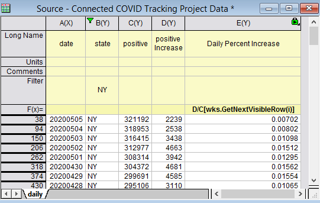

最終更新日：2020/6/17
Originでデータをフィルタリングした後、表示セルの行番号と値を取得したいというお問い合わせがよくあります。例えば、下の画像を参照してください。 
wks.GetNextVisibleRow(N) は、Origin 2016から追加されたワークシートプロパティで、与えられた行Nの次の表示行番号を返します。
例えば、wks.GetNextVisibleRow(0)= は、最初の表示行番号38を返します。
col(Name)[wks.GetNextVisibleRow(N)] は、N行目の後の指定された列の次の表示値を参照します。例えば、上図において列式に、D/C[wks.GetNextVisibleRow(i)] と入力して、列Dの値を次に表示される行のC値で除算し、ニューヨーク州の陽性ケースの日次増加率を取得します。以前のバージョンでは、col(D)/col(C)[wks.GetNextVisibleRow(i)]とします。
Note:
キーワード:フィルタ, 行番号, 表示行